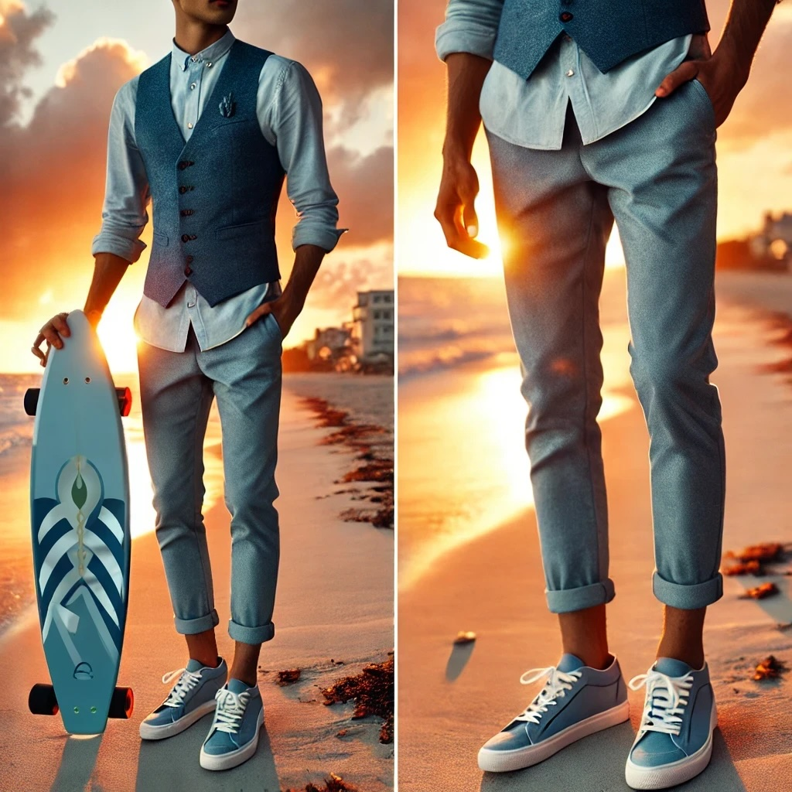
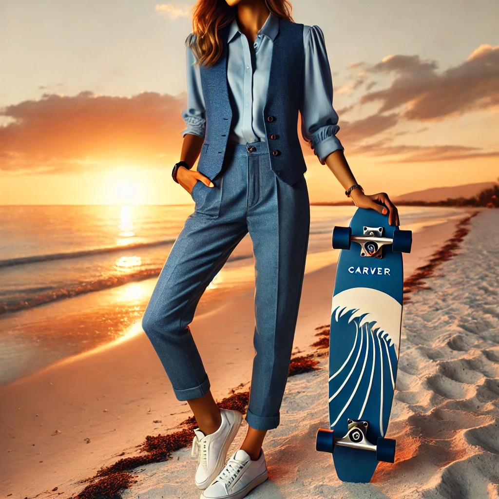

Wenn dein Kopf nicht abschaltet
Du hast viele Möglichkeiten, aber keine fühlt sich wirklich nach deiner an. Bewegung hilft, Abstand zu gewinnen.
Surfskate · Persönliche Entwicklung · Natur
Du funktionierst im Alltag, aber irgendwo ist die Verbindung zu dir selbst leiser geworden? „Wellen des Wandels“ ist ein fünftägiges Retreat für Menschen, die neue Perspektiven suchen – ohne alles hinwerfen zu müssen.

Balance · Richtung · FlowFür wen?
Dieses Retreat richtet sich an Menschen zwischen etwa 25 und 45 Jahren, die offen für neue Erfahrungen sind und Bewegung, persönliche Entwicklung und Natur verbinden möchten. Du brauchst keine Surfskate-Erfahrung.
Du hast viele Möglichkeiten, aber keine fühlt sich wirklich nach deiner an. Bewegung hilft, Abstand zu gewinnen.
Kein Selbstoptimierungsdruck. Ein klarer Rahmen, ein Brett unter den Füßen und der nächste machbare Schritt.
Du musst dich nicht auf eine Rolle reduzieren. Das Retreat schafft Raum für neue Verbindungen und Sichtweisen.

Was sich verbindet
Du erlebst Balance, Richtung und Flow auf dem Board und übersetzt diese Erfahrungen in konkrete Fragen für deinen Alltag.
Der Ablauf
Das Programm verbindet Aktivität und Erholung. Der genaue Ablauf kann an Gruppengröße, Wetter und Standort angepasst werden.
Check-in, Willkommenskreis, persönliche Ziele, Naturspaziergang und Reflexion am Lagerfeuer.
Morgenroutine, Surfskate-Einführung, Resilienz-Workshop, Erholung und Journaling.
Yoga, Surfskate-Progression, Mindset-Training und eine gemeinsame Naturaktivität.
Atemübungen, individuelles Surfskate-Coaching, Wertearbeit und persönliche Reflexion.
Abschluss-Session auf dem Board, persönlicher Action Plan und gemeinsamer Abschluss.
Deine Teilnahme
Nächster Schritt
Die geplante Teilnahme liegt bei etwa 2.400 Euro pro Person. Der finale Preis hängt von Termin, Unterkunft, Verpflegung und enthaltenen Leistungen ab.
Interesse anmelden